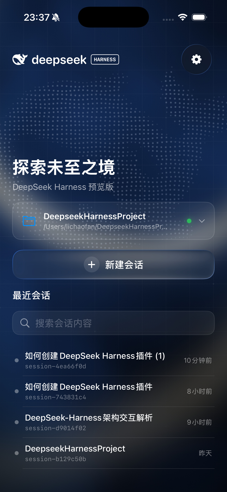

BEFORE：现状整帧 WebGL（1.066× 缓冲，含网格+鲸鱼）→ toDataURL('image/jpeg', 0.68) → 拉伸铺满，叠加 grain/depth/settle。
AFTER：静态海报底 + 设备像素网格（CSS 42pt 线 + 546pt SVG 交点瓦片）+ 高清鲸鱼 SVG 点阵 + 0.7× 流体帧 520ms 淡入。
NATIVE：dsh-mobile 设计稿 harness-background-simulator-v2.png 裁到同布局（含原生 UI 文字，仅作观感基准）。
动画冻在固定相位（grain 25%、settle 8s）以便逐像素比较；流畅度/首帧延迟以 device-probe 的微信实测为准。
